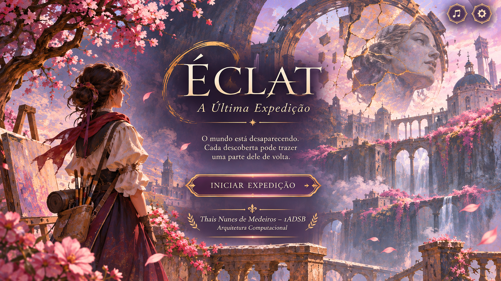

PRÓLOGO · UMA HISTÓRIA ESQUECIDA
Ⅻ
01 / 05
AS QUATRO REGIÕES DE ÉCLAT
O mundo espera suas cores.
Éloïse deixou um mapa com quatro lugares que o Esquecimento alcançou. Entre nas pinturas, investigue seus símbolos e recupere os fragmentos.
Os fragmentos ajudam a decifrar a pintura final.
ATO I
O Coração da Cidade
✦
REGIÃO RESTAURADA
As cores retornaram
Uma nova passagem se abriu.
ÉLOÏSE
EXPEDIÇÃO CONCLUÍDA
✦
Você devolveu as cores ao mundo.
Os doze fragmentos nunca foram peças isoladas. Eram partes de um mesmo sistema: um mundo só funciona quando seus elementos se conectam.
“Nada existe sozinho. Até os mundos mais extraordinários dependem de suas conexões.”